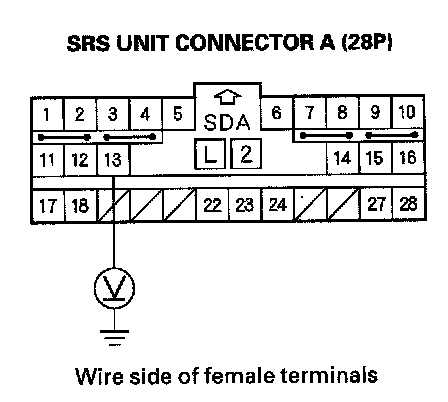

DTC 92-1x
DTC 92-1x ("x" can be 0 thru 9 or A thru F): Short to Power in the Passenger's Airbag Cutoff Indicator1. Erase the DTC memory.
2. Turn the ignition switch ON (II), and check that the SRS indicator comes on for about 6 seconds and then goes off.
Does the SRS indicator stay on, and is DTC 92-1x indicated?
YES - Go to step 3.
NO - Intermittent failure, system is OK at this time. Go to Troubleshooting Intermittent Failures. If another DTC is indicated, go to the DTC Troubleshooting Index.
3. Disconnect the passenger's airbag cutoff indicator 4P connector.
4. Turn the ignition switch OFF. Disconnect the negative cable from the battery, and wait for 3 minutes.
5. Disconnect SRS unit connector A (28P) from the SRS unit.
6. Reconnect the negative cable to the battery.
7. Turn the ignition switch ON (II).

8. Check for voltage between the No. 13 terminal of SRS unit connector A (28P) and body ground. There should be 0.5 V or less.
Is the voltage as specified?
YES - Faulty SRS unit or passenger's airbag cutoff indicator; replace the passenger's airbag cutoff indicator. If the problem is still present, replace the SRS unit.
NO - Short to power in the dashboard wire harness; replace the dashboard wire harness.